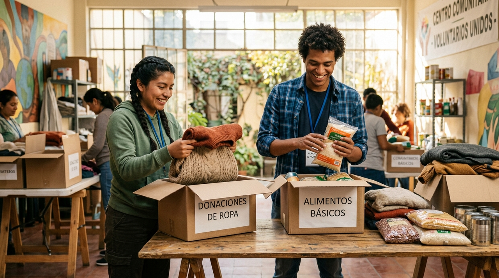

Consulta la campaña
Lee su objetivo, a quién ayuda y qué artículos acepta. Revisa la dirección y la fecha límite antes de preparar el aporte.
Ver el catálogo de campañas manossolidarias
manossolidarias
Cómo donar
Antes de llenar una caja, revisa qué necesita la campaña. Aquí puedes consultar cómo escoger los artículos y preparar su entrega.

Una preparación cuidadosa facilita la recepción de los artículos.
Lee su objetivo, a quién ayuda y qué artículos acepta. Revisa la dirección y la fecha límite antes de preparar el aporte.
Ver el catálogo de campañasComprueba el estado de cada artículo. Guarda los alimentos separados de la ropa y protege las piezas de los juguetes.
Consultar los artículosConfirma el horario con quien organiza la campaña y registra los artículos que vas a aportar.
Registrar un aporteElige una categoría. Estas recomendaciones son generales; cada campaña indica qué necesita.
Mostrando recomendaciones de alimentos.
Arroz, lentejas, pasta y conservas, cuando la campaña los solicite.
Resuelve estas dudas antes de preparar tu aporte. Pulsa una pregunta para leer la respuesta.
Confirma la dirección indicada en la campaña que elegiste. También puedes consultar los horarios y artículos del directorio de puntos de recolección.
Consultar puntos de recolecciónAnota los datos de contacto y las preferencias de colaboración. Este registro es opcional para donar.